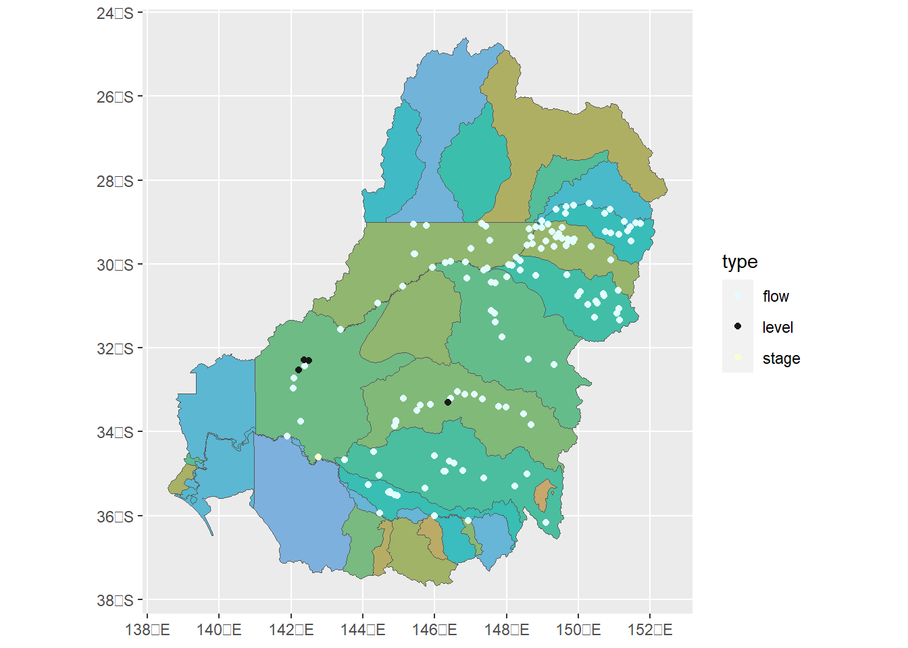

Flow scaling demonstration
Creating scaled hydrographs
Here, we want to grab historical gauge data from across the basin, match it to its catchment so we can use catchment-specific scaling factors, and then create scaled scenarios. These will then be run through the toolkit to
Demonstrate how the toolkit works and its capabilities
Identify needed improvements
Identify our ability to detect changes in outcomes (sensitivity analysis of the available response model– EWR module).
What this isn’t is the best model of climate change. Instead, it uses simple scaling to come up with a reasonable range of changes, and uses them to assess the tools available.
Process
To create the scenario hydrographs, we need to
Identify gauges in the EWR tool, since that’s the module that currently exists
Pull their historical data
Map them to SDL units, because the scaling simulations are done at that scale
- This document stops at this point, along with some visualisations
Scale them. This is done in scaling_scenarios.qmd.
At that point, the scenario hydrographs will be created, and we can then run them through the toolkit.
Toolkit relevance
The creation of flow scenarios is not part of the toolkit proper. Instead, the toolkit expects to ingest hydrographs and then handles the ongoing response models, aggregation, and analyses. Thus, hydrographs are an essential input to the toolkit. The point of this code is to generate those hydrographs.
Set up paths
For the smaller demo the data inside the repo so users can see what’s being produced. For this, we’ll follow a more typical use-case where both the input and output data are external, and so we need their path. This will likely end up on MDBA blob, but for now, I’ll just send it up a level locally. We’ll create an internal directory for the hydrographs, since the other output goes in the scenario_dir as well.
scenario_dir <- '../flow_scaling_data'
hydro_dir <- file.path(scenario_dir, 'hydrographs')
scaling_dir <- file.path(scenario_dir, 'CC_Scenarios_WRPs')if (!dir.exists(hydro_dir)) {dir.create(hydro_dir, recursive = TRUE)}Identify relevant gauges
We want all the gauges in the EWR tool (i.e. all the gauges we can assess).
Gauges in EWR
Which gauges are actually in the EWR tool? The EWR tool has a function, so use that. Use python to access the EWR table. Access the python objects with py$objname.
TODO THIS FAILS AS OF 1.0.4. I have rolled back to ewr version 1.0.1, since the necessary file just doesn’t exist in 1.0.4 (and in about half the branches on github). This needs to be updated and tested.
Error messages:
FileNotFoundError: [Errno 2] No such file or directory: 'py_ewr/parameter_metadata/NSWEWR.csv'
Error in py_get_attr_impl(x, name, silent) :
AttributeError: module '__main__' has no attribute 'ewrs'from py_ewr.data_inputs import get_EWR_table
from py_ewr.observed_handling import categorise_gauges
ewrs, badewrs = get_EWR_table()
distinctgauges = ewrs['Gauge'].unique()
# Separate into flow gauges, level gauges, and stage gauges
catgauges = categorise_gauges(distinctgauges)Get those gauge numbers into an R object, and ask how many. py$ewrsis the full EWR table. So we have made them unique, and then used py_ewe.observed_handling.categorise_gauges to separate them into flow, level, and stage gauges (as documented in that function).
Pull the full list into R to use for things like mapping, and then categorized list too.
ewrgauges = unique(py$ewrs$Gauge)
length(ewrgauges)[1] 149gauge_cats <- py$catgauges %>%
setNames(c('flow', 'level', 'stage'))I could leave that as a list, but a dataframe ends up helping later on with other arguments (e.g. state and variable) and is easier to map.
cat_gauges <- gauge_cats %>%
stack() %>%
rename(gauge = values, type = ind) %>%
mutate(var_to = case_when(
type == 'flow' ~ 141,
type == 'level' ~ 130,
type == 'stage' ~ 100
))149 gauges doesn’t seem too bad.
Map gauges
The gauges with their locations as an sf object are in werptoolkitr::bom_basin_gauges.
Join to the categorized table. right_join maintains the sf object but only has rows for cat_gauges.
geo_gauges <- right_join(bom_basin_gauges, cat_gauges)Joining with `by = join_by(gauge)`nrow(geo_gauges %>%
filter(!st_is_empty(geometry)))[1] 141The st_is_empty filter is because some of the gauges are things like ‘Bills Pipe’ and ‘Pump direct from river’, and so don’t actually have locations. They aren’t pullable from NSW, but we can leave them in for now.
Note that this contains level gauges (and stage). I include the stage gauges in the flow scaling, but not the level. All three types are likely to respond to runoff, with flow being the most directly related, and stage more nonlinear. Level changes will be much more difficult to translate, and so we drop them, at least for the moment.
# The commented out code labels the SDL units, but it's too busy.
ggplot() +
geom_sf(data = sdl_units,
mapping = aes(fill = SWSDLName),
show.legend = FALSE) +
# geom_sf_label(data = sdl_units,
# mapping = aes(label = SWSDLName),
# size = 3,
# label.padding = unit(0.1, 'lines')) +
geom_sf(data = geo_gauges, mapping = aes(color= type)) +
colorspace::scale_fill_discrete_qualitative(palette = 'Harmonic') +
colorspace::scale_color_discrete_diverging(palette = 'Lisbon')
Mapping gauges to SDL unit
To do the flow-scaling, we’ll need to know the SDL unit. While we’re here working with both, let’s add that on to geo_gauges (though we end up doing it a bit differently in the scaling notebook.
geo_gauges <- st_intersection(geo_gauges, sdl_units)Warning: attribute variables are assumed to be spatially constant throughout all
geometriesPull the gauges
We get the gauge data with {vicwater} (now), so we feed geo_gauges$gauge to that, broken into groups by type, e.g. level, flow, stage, because these affect the var_from and var_to we have to ask for. And, despite the EWRs all being in NSW at present, some of the gauges are run by Victoria, so we also need to get the state argument.
We want to pull the full period of record. David’s scenarios go 1 Jan 1890 to 31 Jan 2019. Most gauges start after 1890, and go past 2019. We can still scale the full period of record though because we use q-q scaling, which does not depend on date-matching.
::: {#Aside- gauge puller} I use mdba_gauge_getter to pull gauges in scenario_creation_demo_R.qmd, but there are a couple issues with it- if I pull data from both before and after the gauge start date, it fills the first section with zeros. This is an issue with the API itself. I’ve switched to my {vicwater} package in R, because it’s able to automatically find the period of record and only pull available data for a site (and despite the name, works for Vic, NSW, and QLD).
We can do this two ways- using get_variable_list, extracting the start and end, and then passing those to get_ts_traces. Or we can use get_ts_traces2, which can do the timeperiod extraction internally. Some speed testing shows they’re equivalent, so I’ll use the automated and cleaner get_ts_traces2. :::
Set up for the pull
I’m being explicit about daily means and var_to arguments to match those used internally by mdba_gauge_getter in the EWR tool, since that’s what the EWR expects. I’m using returnformat = sitelist to return a list of gauges instead of a long dataframe because that makes it easier to find (and bypass) site failures.
If we didn’t need a state argument, we could use the gauge_cats list as site_list, with a length-3 vector of the var_to values, since that list is already set up. But we also need the state argument, and that’s on a gauge-by-gauge basis. So instead I call get_ts_traces2 for each combination of gauge type and state, since there are gauges in Vic, Qld, and NSW.
table(geo_gauges$owner, geo_gauges$type)
flow level stage
NSW - NSW Department of Industry – Lands and Water 133 4 0
QLD - Department of Natural Resources, Mines and Energy 1 0 0
VIC - Department of Environment, Land, Water and Planning 2 0 1After lots of testing, I’ve decided to use datasource = A because CP gives unstable 504 Gateway timeouts. It’s tempting to just furrr::future_pmap over the rows of geo_gauges, but that takes about 20x as long, likely a combination of data-passing with furrr and additional API calls to get periods of record. We shouldn’t need to do this much, but still, it’s likely we’ll need to more than once.
We create a dataframe with the arguments to use with purrr::pmap. The gauge column is a list of tibbles, and for each one we need to unlist it to make it a character vector- get_ts_traces doesn’t accept tibbles of gauge numbers.
gauges_to_pull <- geo_gauges %>%
st_drop_geometry() %>%
select(gauge, owner, var_to) %>%
nest_by(owner, var_to, .key = 'gauge')
gauges_to_pullUse a simple wrapper with matching names to make calling the main function easier by feeding defaults.
wrap_traces <- function(owner,var_to,gauge) {
traces <- get_ts_traces2(state = owner,
site_list = unlist(gauge, use.names = FALSE),
var_list = var_to,
start_time = 'all',
end_time = 'all',
interval = 'day',
data_type = 'mean',
datasource = 'A',
returnformat = 'sitelist',
.errorhandling = 'pass')
}This purrr::pmap works most of the time, but occasionally hits a 504 Gateway Timeout, which seem to happen much more frequently with datasource = 'CP, but are also just haphazard. The safely lets it finish, but still annoying to have to re-do any missing pieces. Takes about 2 minutes.
system.time(all_gauges <- purrr::pmap(gauges_to_pull, purrr::safely(wrap_traces))) user system elapsed
8.45 1.07 115.62 That produces a list with 141 gauges that’s 494.3 MB (on 13 Mar 2023) in 125 seconds. Surprisingly fast, really. I’m going to save it though, both to avoid doing it every time and to have a fixed set of data to work with for reproducibility.
Cleanup
Because we used safely, we need to parse out errors. First, are there any?
which(purrr::map_lgl(all_gauges, \(x) !is.null(x$error)))integer(0)Extract just the $result. I could re-map this to all_gauges so I don’t have so much in memory, but not going to bother.
all_results <- purrr::map(all_gauges,
\(x) purrr::pluck(x, 'result')) %>%
purrr::flatten()Use is.null to catch those that errored and didn’t return.
datarows <- purrr::map_int(all_results,
\(x) if (is.null(x)) {0} else {nrow(x)})
datarows 412107 425020 425022 425023 409003 409017 409019 409020 409023 409024
17278 15967 19924 15969 48659 34075 31778 31778 31777 34071
409025 409048 410001 410005 410006 410007 410008 410014 410015 410016
22747 14415 56435 47925 19286 16126 22402 16088 16685 40347
410021 410033 410040 410093 410130 410134 412002 412004 412005 412011
18960 39033 17581 17030 15741 16379 47826 47402 47360 41155
412012 412016 412033 412036 412038 412039 412042 412046 412122 412124
42384 38909 31148 43806 47286 30069 27735 38721 7182 7182
412163 412188 412189 416001 416003 416006 416007 416008 416010 416011
7013 7650 5746 18212 37248 19379 18918 19420 18358 18698
416012 416020 416027 416032 416037 416039 416040 416047 416048 416050
18977 16398 15912 19770 17773 18345 9976 14104 13084 12915
416052 416072 417001 418002 418004 418011 418013 418026 418037 418048
13042 4212 19060 31288 34196 16010 24878 20085 19974 14924
418049 418052 418053 418055 418063 418066 418068 418070 418074 418076
13225 15479 14757 15589 13594 12670 12427 10550 9442 9413
418078 418079 418085 419001 419006 419007 419012 419015 419016 419020
9382 9388 7292 19846 18258 18122 24894 15993 18096 16835
419021 419022 419026 419027 419028 419032 419039 419045 419049 419091
18815 19222 18817 18765 14768 16543 18290 18543 18317 9396
420020 421001 421004 421011 421012 421019 421022 421023 421088 421090
7741 65924 40243 19998 30769 24522 24847 29326 17374 13481
421146 422001 422002 422003 422004 422005 422013 422015 422016 422025
12916 18262 47596 15448 15590 28732 21260 23023 21257 8567
422026 422027 422028 423001 423002 423004 423005 425003 425004 425007
8442 8443 8600 36931 36931 10818 10817 46729 43390 30313
425008 425010 425012 425013 425019 425039 425900 416201A 414209 409207
33035 13216 17929 18804 22208 8599 10149 38418 1590 17622
414203
17361 Check missing data
any(datarows == 0)[1] FALSECheck error_num
any(purrr::map(all_results, \(x) sum(x$error_num > 0)) %>% unlist())[1] FALSEGauge 412036 returns duplicate entries for every day from 1990-2004. The actual flow values differ for each pair and it’s not clear which to use. It seems to be an issue straight from the API- they come in that way, no matter the datasource or subset of the period. I’ve left them in here, but need to cut out one or both when we use the data. See scaling notebook.
Drop to just EWR columns
All we really need for the EWR tool is date and value, but we also keep the quality code id and variable on the data too so it’s clear what we have until the data gets used.
just_values <- all_results %>%
purrr::map(\(x) dplyr::select(x, time, site, value, variable,
quality_codes_id, quality_codes))Save the data
if (REBUILD_DATA) {
saveRDS(just_values, file = file.path(hydro_dir, 'extracted_flows.rds'))
}TODO
save format
Currently separate files since each sequence has a different date range
Could have one file per scenario with cols for gauges, but would have lots of empty cells when dates don’t match
whatever the standard netcdf format is, once we know what it is